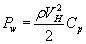
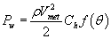
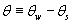
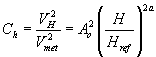
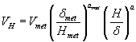

CONTAM 使您能够将天气对建筑物的影响纳入考虑范围。天气参数包括环境温度、气压、风速、风向以及室外污染物水平。模拟所需的天气数据类型取决于您正在执行的模拟类型、是否要考虑风的影响以及是否正在模拟污染物。如果您正在执行稳态气流模拟，则只需要稳态天气和风数据。如果您正在执行瞬态气流模拟，则可以使用稳态或瞬态天气数据。瞬态天气数据是通过使用天气文件或WTH文件来实现的。如果您正在执行瞬态污染物模拟，您也可以使用稳态或瞬态环境污染物数据。瞬态环境污染物数据通过使用环境污染物文件或 CTM 文件来实现（参见 污染物文件 ).
注意： WTH 和 CTM 文件都假定任何给定时间点的环境房间的一组值，即压力或污染物场没有空间变化。但是，CONTAM 还允许使用瞬态风压和污染物文件（WPC 文件），您可以使用它们来解释建筑围护结构表面上的压力和污染物浓度的空间变化（请参阅使用 WPC 文件）。
稳态天气
当您使用稳态天气数据时，ContamX 在模拟过程中保持环境温度、气压、风速和风向以及相对湿度恒定。以下各节给出了这些参数的详细描述。
瞬态天气
执行瞬态模拟时，您可以使用瞬态天气数据来模拟不断变化的室外天气和风况。瞬态天气数据存储在天气文件中，您必须根据以下指定的特殊格式创建该文件： 天气文件格式 以下部分。天气文件包含至少一天到一年内每天离散间隔的环境温度、压力、风速和风向以及湿度比。如果天气文件中数据之间的间隔与模拟时间步长不匹配，ContamX 将对天气数据进行线性插值以获得所需时间步长的值。
风
风压可能是空气渗透建筑围护结构的重要驱动力。它是风速、风向、建筑物配置和当地地形影响的函数。 CONTAM 使您能够考虑风压对穿过建筑围护结构的流动路径（外部气流路径）的影响。您可以根据具体情况定义如何考虑每个外部流动路径的风效应。在 ContamW 中，您可以选择忽略风对围护结构穿透的影响，将每个围护结构穿透的风压定义为恒定，或对围护结构穿透实施可变风压。
CONTAM 提供了处理风对建筑围护结构的可变影响的通用方法。此方法要求您向 CONTAM 提供与确定建筑表面局部风压系数相关的信息。
有关风压对建筑物影响的一般介绍，请参阅 2005 年 ASHRAE 基础手册中的第 16 章“建筑物周围的气流”[ 2005年美国采暖及制冷工程师协会 ]。以下概述了 CONTAM 如何处理这些效果。
建筑表面风压方程为

哪里
VH 迎风墙高度（通常是建筑物的高度）处的接近风速
Cp 风压系数
风压系数可以进一步概括为局部地形影响系数和风相对于所考虑的墙壁的方向。以下方程是 CONTAM 在计算建筑物风压时使用的方程。

哪里
r 环境空气密度
Vmet 气象站测量的风速
Ch 考虑地形和海拔影响的风速修正系数
f(q) 系数是相对风向的函数。 CONTAM 将此函数称为 风压剖面 .
相对风向由下式给出

哪里
qw 风方位角（N = 0 ° ，E = 90 ° 等），以及
qs 表面方位角。
rV2met / 2 上式中的公式是 ContamX 根据稳态或天气文件温度、压力和风速数据计算得出的。
Cp ，ASHRAE 使用的压力系数相当于 f(q ）在 CONTAM 公式中。在 ContamW 中，您必须定义函数 f(q ）的形式 风压剖面 正如稍后所解释的。请参阅 2005 年 ASHRAE 基本手册第 27.5 页 [ 2005年美国采暖及制冷工程师协会 ] 了解有关压力系数数据的详细信息。 NIST 多房间建模网站上有一些以 CONTAM 库文件形式提供的风压剖面示例。
风压调节器， Ch ，解释了之间的差异 Vmet and VH 。的价值 Ch 对于给定建筑物上的所有开口，通常都是恒定的。但是，ContamW 允许您定义一个默认值，该值将用于连接到环境的每个流路（请参阅 风属性 ) 或为每个路径单独设置该值。 ContamW 使用以下公式来计算值 Ch:
|
 |
(1) |
哪里 H 是墙的高度， Ao and a 取决于建筑物周围的地形[ 美国采暖及制冷工程师协会 1993 ，第 14.3 页]：
|
地形
类型 |
系数
(Ao) |
指数
(a) |
| 城市 | 0.35 | 0.40 |
| 郊区 | 0.60 | 0.28 |
| 机场 | 1.00 | 0.15 |
风速， Vmet ，通常是在机场（开放地形）的海拔高度测量的， Hmet = 10m，距地面。风速， Vo ，在建筑工地的同一高度由下式给出
风速， VH ，在墙的顶部，标高 H ，则由下式给出

更新的方法，来自中提出的方法 美国采暖及制冷工程师协会 1993 ，第 16 章介绍了考虑局部地形影响的方法 2005年美国采暖及制冷工程师协会 。使用这种方法， VH 根据以下等式计算：

哪里
dmet 气象站风边界层厚度
d 当地建筑物地形的风边界层厚度
amet 气象站风边界层指数
a 当地建筑物地形的风边界层指数
第16章表1 2005年美国采暖及制冷工程师协会 包含上述参数的值。 ContamW 计算 Ch 根据上面的等式（1）并提供了输入 当地地形 常数 , Ao ，但不是 d 。因此，为了实现更新的方法，必须调整 Ao 根据以下等式：